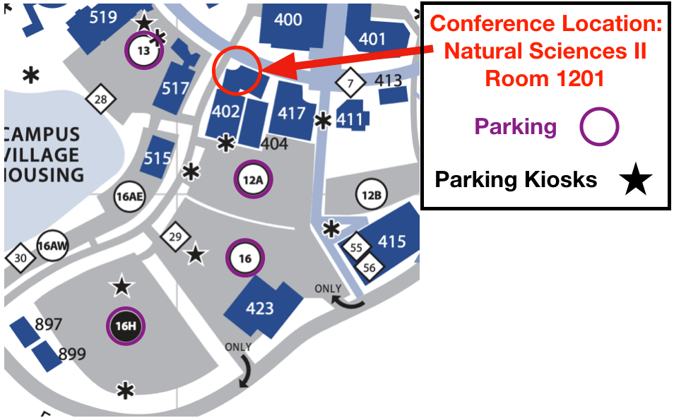

Monday, August 12th - Tuesday, August 13th
Natural Sciences Building II, Room 1201, UC Irvine
| Name | Talk Title | Time | Coffee and registration | 8:15 AM - 9:00 AM | Feedback (José Flores Velázquez) |
|---|---|---|
| Cameron Trapp | Radial Gas Flows in FIRE | 9:00 AM - 9:16 AM |
| Gene Leung | The MSODEF survey: a census of AGN-driven ionized outflows at z~2 | 9:16 AM - 9:32 AM |
| Matthew Orr | Blowing Bubbles: Feedback and Breakout of Clustered Supernova Remnants | 9:32 AM - 9:52 AM |
| Sijie Yu | Stars made in outflows may populate the outer stellar halo of the Milky Way | 9:52 PM - 10:08 PM |
| Break | 10:08 AM - 10:38 AM | |
| Star Formation (Anna Yu) | ||
| José Flores Velázquez | TBD | 10:38 AM - 10:54 AM |
| Najmeh Emami | Testing the effect of burstiness on the stellar kinematics of local dwarf galaxies | 10:54 AM - 11:10 AM |
| Jorge Moreno | Galaxy mergers on FIRE | 11:10 AM - 11:35 AM |
| Discussion: Feedback and SF (Jorge Moreno, Matt Orr) | 11:35 AM - 12:05 PM | |
| Lunch Break | 12:05 PM - 1:35 PM | |
| Dark Matter (Victor Robles) | ||
| Daniel Gilman | Unveiling the nature of dark matter in galaxies with strong gravitational lensing | 1:35 PM - 1:51 PM |
| Daniel McKeown | Dark Matter Indirect Detection Models in Fire Simulations | 1:51 PM - 2:07 PM |
| Alex Lazar | TBD | 2:07 PM - 2:23 PM |
| Victor Robles | First Galaxies in Scalar Field/Fuzzy dark matter | 2:23 AM - 2:43 AM |
| Angela Berti | Forward modeling of the galaxy-halo connection | 2:43 PM - 2:59 PM |
| Break | 2:59 PM - 3:29 PM | |
| Cosmic Rays (Daniel McKeown) | ||
| Suoqing Ji | Cosmic ray dominated galaxy halos | 3:29 PM - 3:49 PM |
| Dusan Keres | Cosmic rays and galaxies | 3:49 PM - 4:14 PM |
| Discussion: Cosmology and Dark matter (James Bullock, Victor Robles) | 4:14 PM - 4:44 PM | |
| Name | Talk Title | Time | Coffee and registration | 8:15 AM - 9:00 AM | Dwarf galaxies (Najmeh Emami) |
|---|---|---|
| Evan Kirby | Deep Keck Spectroscopy of M31's Satellite Galaxies | 9:00 AM - 9:25 AM |
| Gina Duggan | Galactic Chemical Evolution Model Provides Quantitative Constraints on the r-process in Dwarf Galaxies | 9:25 AM - 9:41 AM |
| Alex Ji | Chemical Evolution in Ultra-faint Dwarf Galaxies | 9:41 AM - 10:01 AM |
| Katy Rodriguez Wimberly | Suppression of Star Formation on the Smallest Scales and Gaia’s Orbital Insights | 10:01 AM - 10:17 AM |
| Break | 10:17 AM - 10:47 AM | |
| Dwarf Galaxies 2 (Alex Ji) | ||
| Coral Wheeler | Sweating the small stuff: Or how I learned to START worrying and love the smallest galaxies | 10:47 AM - 11:07 AM |
| Ethan Jahn | Dark and Luminous Satellites of LMC-mass Galaxies in the FIRE Simulations | 11:07 AM - 11:23 AM |
| Andrew Graus | Formation of stellar age gradients in simulations of dwarf galaxies | 11:23 AM - 11:43 AM |
| Francisco Mercado | Metallicity Gradients in Simulated Dwarf Galaxies | 11:43 AM - 11:59 AM |
| Discussion: Happy, Grumpy, Sleepy, Dopey, Bashful, Sneezy, & Doc (Coral Wheeler, Andrew Graus) | 11:59 AM - 12:29 PM | |
| Lunch Break | 12:29 PM - 2:00 PM | |
| Galaxies at High Redshift (Katy Rodriguez Wimberly) | ||
| Mike Cooper | Massive Galaxy Formation in the Epoch of Reionization | 2:00 PM - 2:25 PM |
| Adam Trapp | How will cosmic variance affect high redshift surveys? | 2:25 PM - 2:41 PM |
| Lluis Mas-Ribas | Lya emission and polarization as a probe of galaxy evolution over cosmic time | 2:41 PM - 3:01 PM |
| Caleb Choban | Dust Evolution in FIRE | 3:01 PM - 3:17 PM |
| Break | 3:17 PM - 3:47 PM | |
| Stars at High Redshift (Tae Baxter) | ||
| Richard Mebane | Population III Star Formation and the Cosmic 21-cm Background | 3:47 PM - 4:03 PM |
| Nick Choksi | Star cluster formation across cosmic time | 4:03 PM - 4:19 PM |
| Discussion: Stars and Galaxies High Redshift (Alicia Lanz, Alex Ji) | 4:19 PM - 4:49 PM | |
| Name | Institution |
|---|---|
| Alex Ji | Carnegie Observatories |
| Francisco Mercado | UC Irvine |
| José Flores Velázquez | UC Irvine |
| Mike Cooper | UC Irvine |
| Cameron Trapp | UC San Diego |
| Richard Mebane | UC Los Angeles |
| Evan Kirby | Caltech |
| Suoqing Ji | Caltech |
| Adam Trapp | UC Los Angeles |
| Lluis Mas-Ribas | Caltech / JPL |
| Gina Duggan | Caltech |
| Daniel Gilman | UC Los Angeles |
| Nick Choksi | UC Berkeley |
| Katy Rodriguez Wimberly | UC Irvine |
| Daniel McKeown | UC Irvine |
| Gene Leung | UC San Diego |
| Victor Robles | UC Irvine |
| Matthew Orr | Caltech |
| Kyle Stewart | Cal Baptist University |
| Alicia Lanz | Carnegie Observatories |
| Allison Strom | Carnegie Observatories |
| Caleb Choban | UC San Diego |
| Mike Grudić | Caltech |
| Coral Wheeler | Caltech |
| Andrew Graus | University of Texas at Austin |
| Sijie Yu | UC Irvine |
| Alex Lazar | UC Irvine |
| Ethan Jahn | UC Riverside |
| Jorge Moreno | Pomona College |
| Angela Berti | UC San Diego |
| Stella Zhang | UC San Diego |
| Kevin Andrade | UC Irvine |
| Dusan Keres | UC San Diego |
| Najmeh Emami | UC Riverside |
| Hai-Bo Yu | UC Riverside |
| Tae Baxter | UC Irvine |
| James Bullock | UC Irvine |
| Phil Hopkins | Caltech |
| Tae Baxter | UC Irvine |
| Mahdi Qezlou | UC Riverside |
GalFRESCA 2019 will be held in Room 1201 of Natural Sciences Bldg. II (Bldg. 402 on the map).

The nearest parking is available in lots 13, 12A, 16, and 16H (directions easily found in google maps by typing "uci lot 13" for exmple). You may purchase a permit at any parking lot kiosk depicted by stars on the map. The kiosks give the option to purchace a $10 all day permit (valid for any unmarked stall in lot 16H) or a $14 all day reserved parmit (valid for any marked AR stall in lots 13, 12A, 16). Upon leaving the parking area please make your way to the north-east entrance of building 402. The room in which the conference will take place will be directly ahead of you once you enter the first floor of the building.
The nearest and most affordable lodging is available near John Wayne Airport, a few miles from the conference location. Options include: AC Hotel by Marriott Irvine, Extended Stay America Orange County, Embassy Suites by Hilton Irvine Orange County Airport, Atrium Hotel, and others.
There are a number of restaurants at the University Center that are close enough to visit during our lunch breaks, Eureka!, Spoleto: My Italian Kitchen, and several chains (e.g. Chipotle, Blaze Pizza, In-N-Out).
If you have any questions or concerns, please contact Francisco Mercado (mercadf1---at---uci.edu) or Anna Yu (anna.yu---at---uci.edu).
{kind=link}